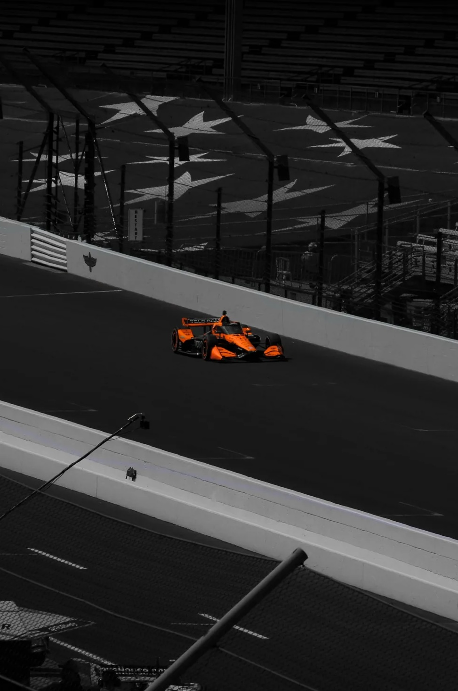
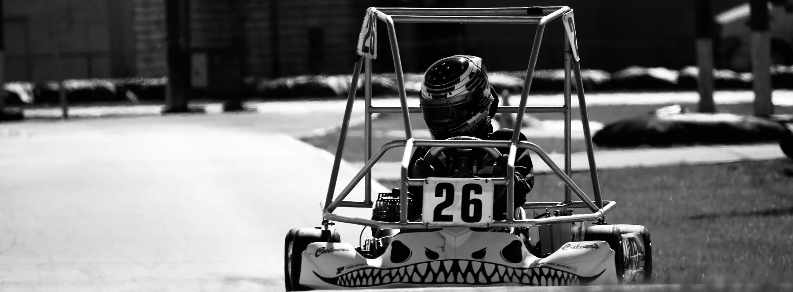

Hello, I'm Sanjay! I am a Motorsports Engineering student at Purdue University Indianapolis, with a strong interest in aerodynamics, vehicle design, and race operations. As the Junior Board Media Officer for Purdue Motorsports Engineering Club, I manage the Media sub-team and handle all social media and race day content.